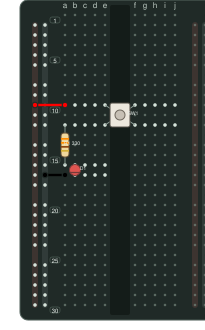

Breadboard circuits, written in Ruby
Make every connection clear.
Describe holes, components, and wires. Breadkit resolves the connections so you can render a diagram and check the same circuit for mistakes.
From the button and LED example
board :half
button :SW1, at: "e10"
resistor :R1, "330", pins: %w[a12 a16]
led :D1, color: :red, anode: "b16", cathode: "b17"
One circuit file, three tools
1. Describe
breadkit
Write board holes, parts, wires, and expected connections in Ruby.
2. Render
breadkit-render
Generate SVG or PNG diagrams from the same file.
3. Check
breadkit-lint
Check placement, electrical connections, and design intent.
Start with a working example
The guide pairs real Ruby files with their generated diagrams. Start with a button and LED, then move on to an offboard module.
Open the user guideInstall and run
gem install breadkit breadkit-render breadkit-lint
bkrender circuit.bk.rb -o circuit.svg
bklint circuit.bk.rbDSL files run as Ruby. Only load files you trust.